相关分析能够分析变量间的关联程度和关联形式，并且可以在相关分析的基础上，再通过回归分析来确定出变量之间的数量关系，进而用于生产控制和预测。
注：相关分析是对两个变量之间「线性」关系的描述和度量，如果是非线性的，需要通过转化得到线性关系。
例如： 𝒚 = 𝟑.𝟓𝐱 + 𝟏.𝟐
上述表达式如果是一个确定的函数关系，那么系数值是准确的。如果是通过回归模型得到一个表达式，那么系数值是一个近似估计值。
相关分析解决了以下问题：
- 变量之间是否存在关系？
- 如果存在关系，它们之间是什么关系？
- 关系强度如何？（通过相关系数进行度量）
- 样本所反映的变量之间的关系能否代表总体变量之间的关系？（要对相关系数进行假设检验）
相关分析的步骤
第一步：散点图
通过散点图初步观察变量之间的关系，它们可能是非线性关系、线性关系或无相关关系的。
两个变量使用「单个散点图」，多个变量使用「矩阵散点图」。
第二步：转换
若变量之间存在非线性关系，则要通过转换将其转换为线型关系。
第三步：计算相关系数
第四步：相关系数的统计检验
为了探究系数是否具有统计意义，若具有统计意义，则表明计算得到的相关系数可以应用于模型中。
相关分析步骤的操作
散点图
在分析问题之前，不管有没有要求，都要通过可视化的方法来观察数据的分布特征。
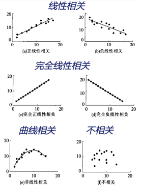
相关系数的计算
公式：
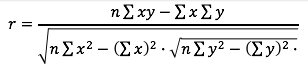
该相关系数称为线性相关系数，或称为person相关系数（要注意这里讨论的相关分析是线性相关的，非线性相关关系要进行变量转换。）
根据样本数据计算出来相关系数是样本相关系数，要通过样本相关系数对总体相关系数进行估计，即要对样本相关系数进行统计显著性检验；
相关系数描述了两个变量之间的相关联程度，其数值大小代表着一定的相关性强弱：
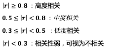
SPSS 操作：
分析 － 相关 － 双变量相关性
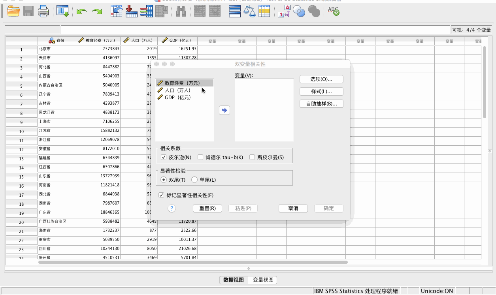
如果需要计算多个变量的相关系数，可以将所有变量均选入“变量”中。
结论
P = 0.000 < 0.05，拒绝原假设。具体的原假设和备择假设内容参见下一节。
相关系数的统计检验
相关系数的含义
- 相关系数的范围是[-1, 1]，即 -1 ≤ r ≤ 1，当 r 为负数时，表示变量间负相关。r 的绝对值越大表示变量间相关性越强；
- 相关分析中两个变量之间的关系是平等的，变换 𝒙,𝒚 顺序不影响相关系数 r 的大小，这一点从它的公式也可以看出；
相关系数 r 描述的是线性关系，不能用于描述非线性关系。
- 非线性关系如果要纳入多元回归模型，需要进行转换。
- 相关系数小也不代表变量间不存在任何关系，可能存在很强的非线性关系。
- 相关系数表示的是一个变量随另外一个变量变化而变化的线性趋势大小；
相关关系不意味着因果关系
- 在相关分析中，变量之间的关系平等，仅通过相关分析还不能发现因果关系，需要依靠在研究问题领域的专业知识。
相关系数的检验
- 检验的原假设：相关系数 = 0；备择假设：相关系数 ≠ 0
- 当给出的相伴概率 sig < 0.05 时，拒绝原假设；
- 当同时对多个变量进行相关分析时，在输出相关系数矩阵的同时，也可以输出相伴概率矩阵；
相关系数的种类
- Pearson 相关系数：适用于数值型变量，是运用最广的一种相关程度统计量。
- Spearman 等级相关：适用于度量有序分类变量之间的相关程度。
- Kendall tua-b 等级相关：它也是用来度量有序分类变量之间的线性相关关系。度量原理是把所有的样本点配对，看每一对中的 𝒙 和 𝒚 是否都增加来判断总体模式。
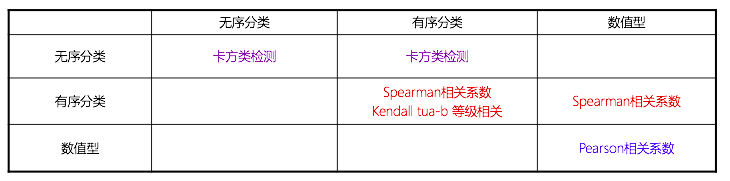
偏相关分析
在多变量的情况下，变量之间的相关关系是很复杂的。如：
商品的需求与价格关系，价格上涨时需求降低，但随着收入水平的提高，价格对需求的影响将会降低。
因此，我们在分析时需要控制收入水平的值，才能探讨需求和价格的关系。
偏相关分析：是指在对其他变量的影响进行控制的条件下，分析多个变量中某两个变量之间的线性相关程度，计算偏相关系数。
相关分析的案例
数值相关
分析 － 相关 － 双变量
选择 “皮尔逊相关系数”
选项 － 勾选“平均值和标准差” － 勾选 “成对排除个案”
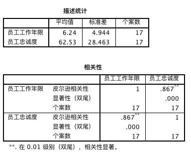
描述性统计量中，平均值为 6.24，说明该公司资历较老。
** 表明非常显著的(< 0.01)，0.867表示具有强相关关系。
P = 0.000 < 0.01 进一步解释了显著性。
等级相关
注：等级相关是指两个变量是有序类型的
第一步：绘制散点图
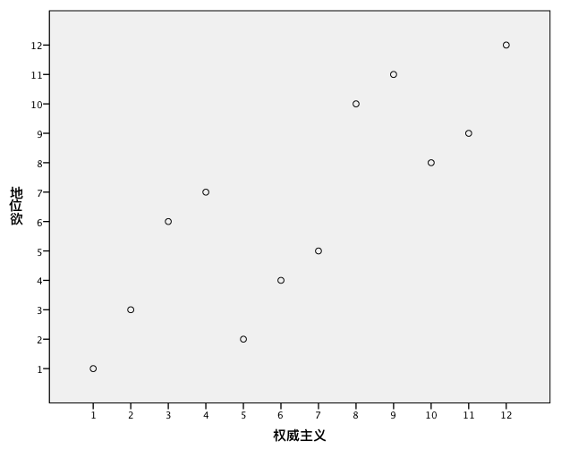
第二步：计算相关系数
分析 － 相关 － 双变量
选择 “肯德尔相关系数” 和 “斯皮尔曼相关系数”
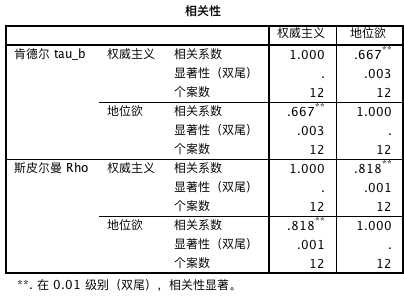
两个相关系数值不同，斯皮尔曼相关系数更大，为 0.818，肯德尔相关系数为 0.667。
偏相关
分析 － 相关 － 偏相关性
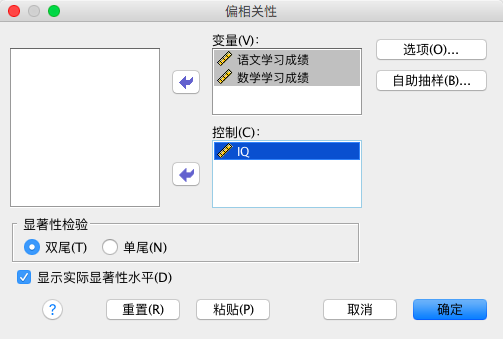
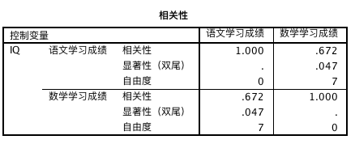
p 值为 0.047，0.01 < 0.047 < 0.05，说明存在显著的相关关系，而不能说是非常显著。
如果不控制 IQ，则相关性是非常显著的。
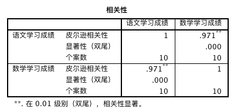
查看 IQ 与这两个变量的关系，发现 IQ 与这两个变量之间存在着很强的相关性。
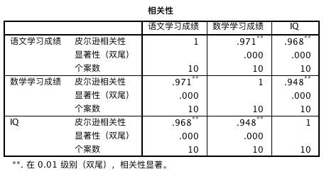
多变量相关
分析 － 相关 － 双变量
选择 “皮尔逊相关系数”
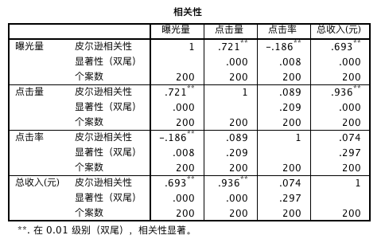
总收入与曝光量、点击量有很强的正相关关系，即与绝对量有很强的关系，而与相对量（曝光率）的关系没有太大的关系。
因此，如果想提高总收入，可以通过提高曝光量（提高文章阅读量）和点击量（精准的广告）来实现。